Карьера в IT
bit.ly/itcar2016
Кто мы
- Программисты - пишут программы
- Дизайнеры - оформляют внешний вид
- Тестировщики - проверяют
- Системные инженеры - обслуживают инфраструктуру
Как заработать на том, что бесплатно?
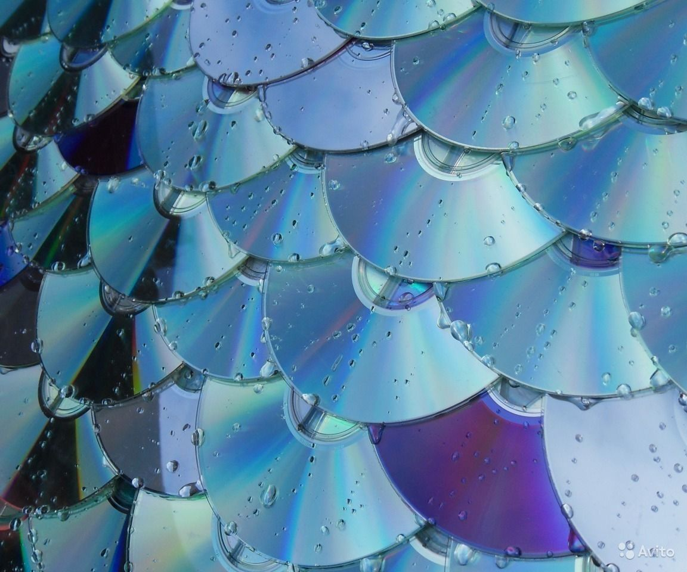Это не всегда было так
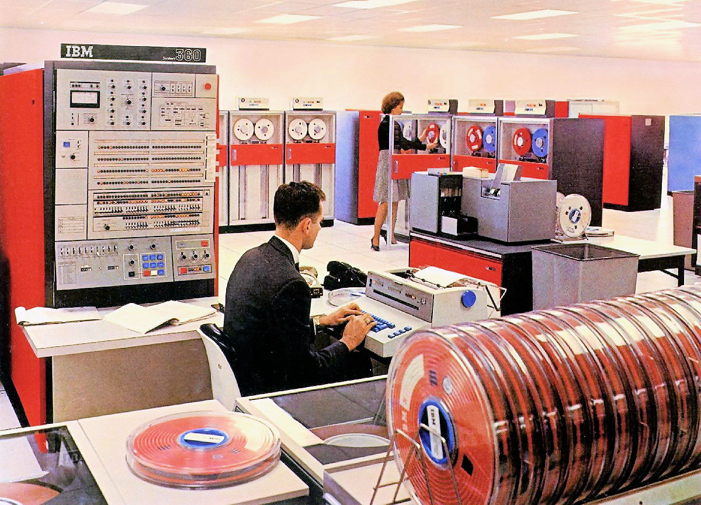
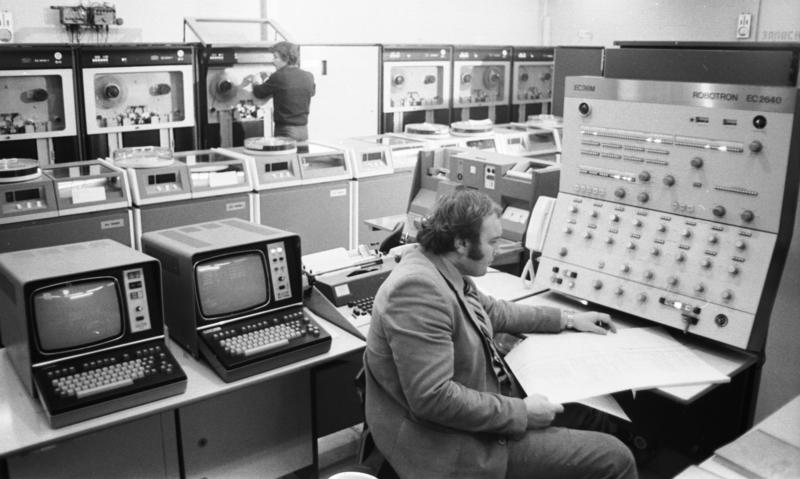
Эволюция накопителей. 1969
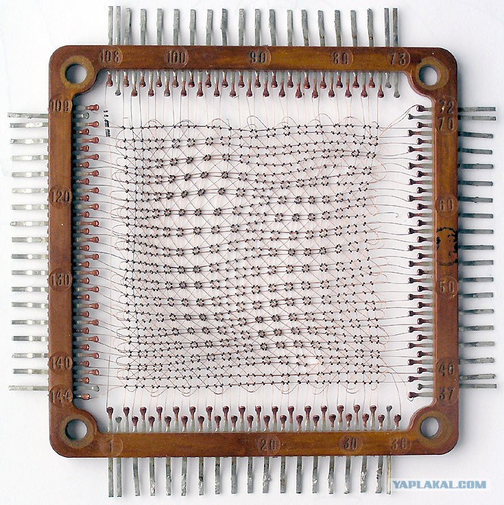Эволюция накопителей. 1951
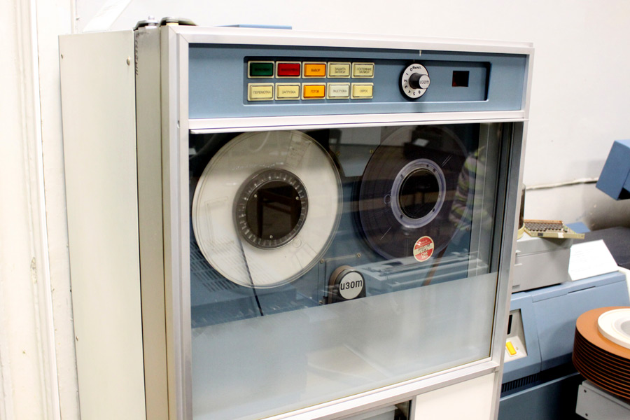Эволюция накопителей. 1980-е
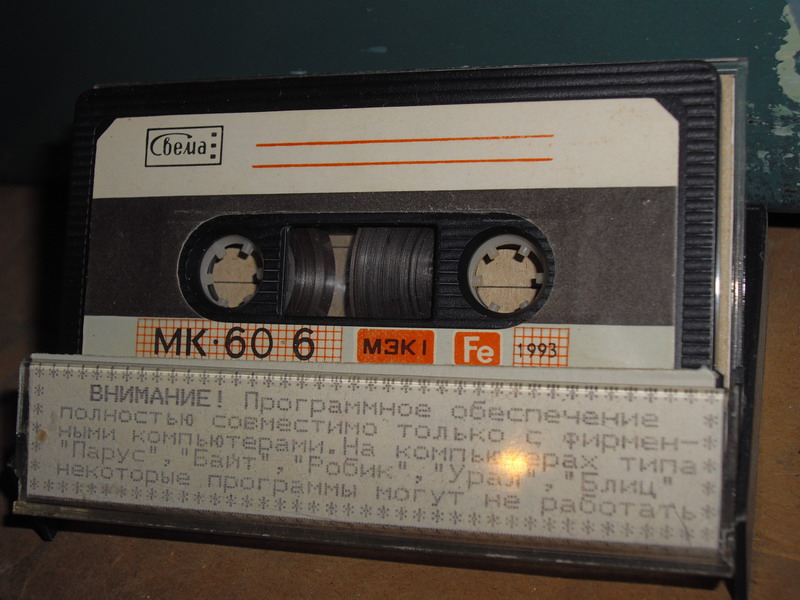Эволюция накопителей. 1984
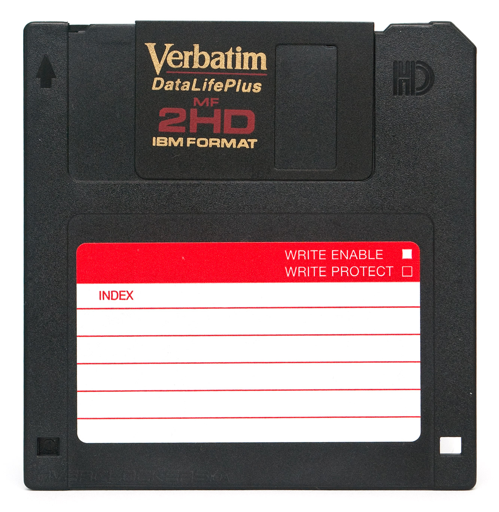Эволюция накопителей. 1988
Эволюция накопителей. 2000
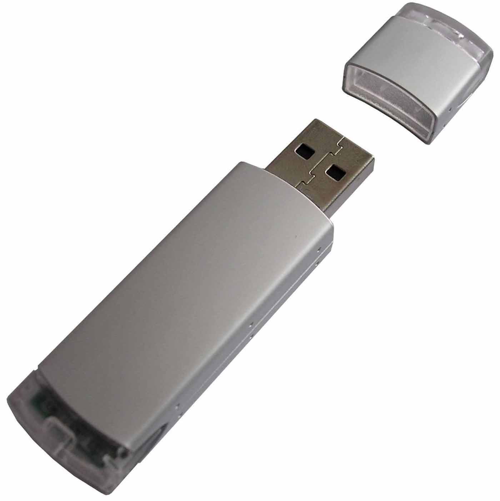Интеллектуальная собственность - это продукт
Открытая архитектура IBM PC

The web
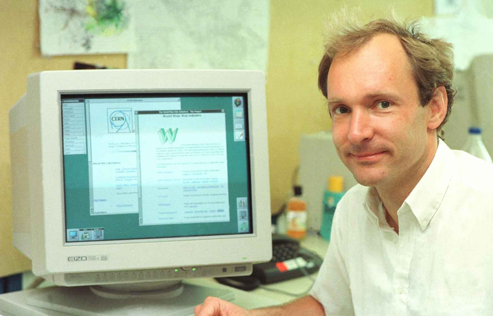Mobile first
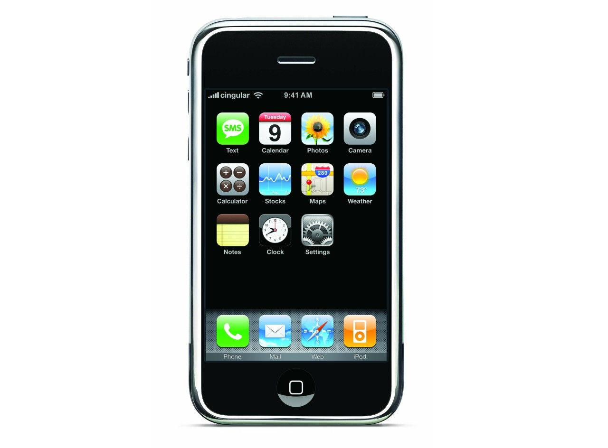Бизнес-модели ПО
- Одноразовая покупка
- Подписка
- Интеграция
- Поддержка
- Специфические требования
Открытый код
Открытый код
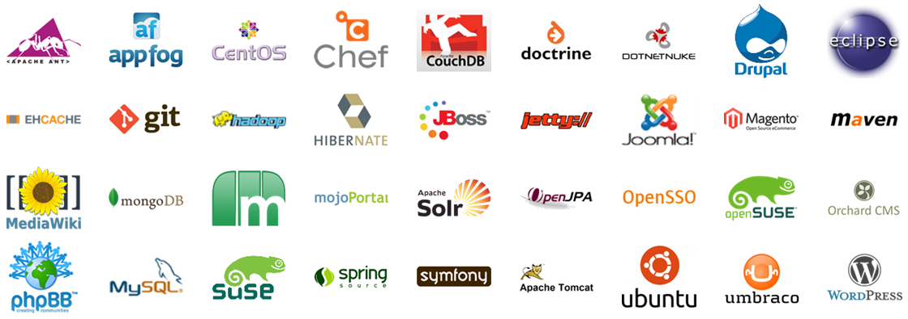Друпал

Друпал